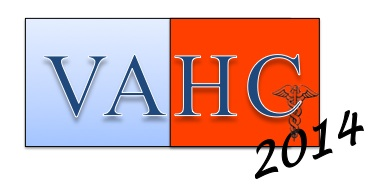

About
The 2014 Workshop on Visual Analytics in Healthcare (VAHC 2014) is the fifth annual workshop that provides an opportunity for participants to discuss state-of-the-art data visualization techniques and review how such techniques can be applied to clinical data. The primary objective of the annual workshop is to bring together clinicians, leading scientists and visionaries to discuss visualization techniques that can be applied to clinical settings and discuss the areas of healthcare that need more attention from the visualization and visual data mining communities. The workshop will allow participants to showcase their ongoing work on visual analytics of healthcare-related data through podium, posters, or demo presentations as well as to learn more about emerging techniques, software applications, and datasets.
Important Dates:
- Deadline for submission:
August 31st, 2014September 7th, 2014 - Notification of Acceptance:
September 25th, 2014September 29th, 2014 - Camera-ready Papers Due: October 10th, 2014
- Workshop: November 15th, 2014
Join the community:
(1) Join our mailing list:
Only emails that are approved by the moderators are distributed to the mailing list. Spam-free mailing list.
(2) Follow us on Twitter:
@VisAnalyticsHCSponsors:
-- 